Qualnet
Éditeur français de logiciels qualité · Groupe Imagine Human
Product Owner · 2026 à aujourd'hui
Faire évoluer une suite qualité no-code
- Backlog produit et sprints de deux semaines
- IA intégrée à la plateforme
- Gestion documentaire, audits, non-conformités
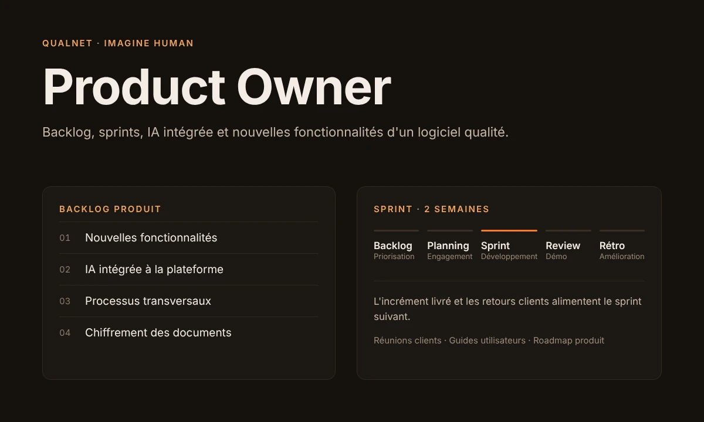
Contexte
Qualnet est un éditeur français de logiciels qualité créé en 1997, qui a rejoint le groupe Imagine Human en 2026. Ses solutions no-code aident les organisations privées et publiques à simplifier, structurer et piloter leurs démarches qualité.
La suite couvre la gestion documentaire qualité (Qualnet DOC), la dématérialisation des processus (Qualnet DYNAMIC) et le management de la qualité : non-conformités, audits, plans d'actions, évaluation des fournisseurs et indicateurs. Elle est proposée en SaaS ou on-premise et utilisée dans la santé, l'agroalimentaire, la pharmacie, la banque-assurance et l'industrie.
J'y occupe le rôle de Product Owner. Je gère le backlog et j'organise des sprints de deux semaines centrés sur l'amélioration continue du produit.
Qualnet en chiffres
Création de Qualnet, éditeur français de logiciels qualité.
Clients, des hôpitaux aux groupes industriels.
Utilisateurs de la GED qualité dans le monde.
Éditeur certifié ISO 9001:2015.
Adoption de la méthode Agile Scrum par l'équipe.
Score EcoVadis 2024, médaille d'argent.
Parmi ses clients : le CHU de Montpellier, Loxam, NAOS, Vilmorin & Cie, Leerdammer et la Croix-Rouge française.
Un Product Owner issu du design
Grâce à mon expérience de designer, je participe aussi à la conception du produit, en particulier des nouvelles fonctionnalités d'IA intégrées au logiciel :
- Conception des flows et des parcours utilisateurs.
- Design des interfaces à partir du design system de l'entreprise.
- Amélioration des nouvelles fonctionnalités d'IA du logiciel.
- Développement de nouvelles fonctionnalités et intégration de l'IA dans la plateforme.
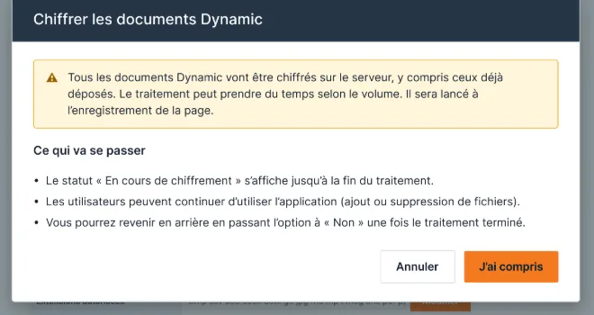
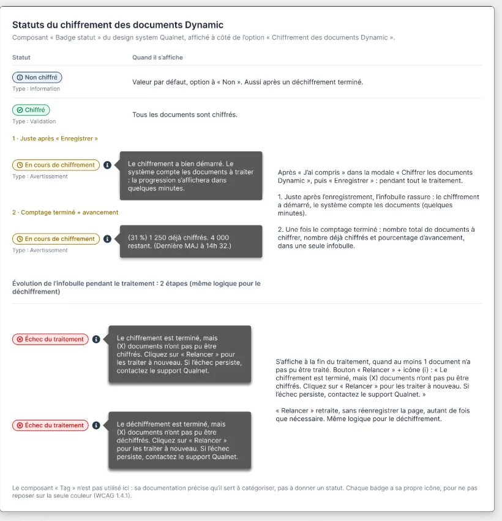
L'IA dans les workflows produit et design
Une partie de mon travail est consacrée à l'exploration et à l'intégration de l'IA dans les workflows de Product Owner et de design :
- Création d'artefacts qui relient le backlog à Figma et aux maquettes.
- Skills de rédaction de user stories et de tickets Jira.
- Skills Figma pour créer des flows et des story maps, avec l'analyse des points d'amélioration et des goulots d'étranglement.
- Interfaces et prototypes basés sur le design system de l'entreprise.
- Documentation des processus d'exploration et analyse des livrables.
- Mise en place de l'IA avec l'équipe sur des processus transversaux (produit, design, développement et QA).
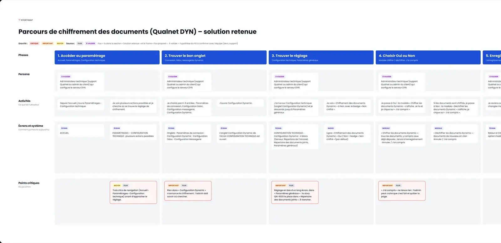
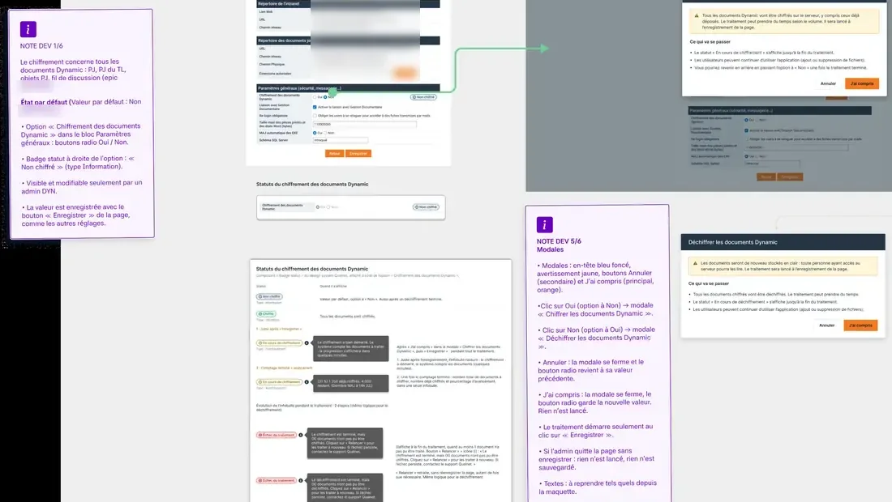
Des tickets pensés pour toute l'équipe
Je rédige des tickets conçus pour un travail transversal entre le Product Owner, l'équipe design, le développement et la QA : contexte, user story, critères d'acceptation, maquettes liées et cas de test.
Clients, documentation et roadmap
Je documente les nouvelles fonctionnalités dans les guides utilisateurs. J'anime aussi des réunions avec les clients pour développer des fonctionnalités qu'ils financent, et j'évalue les sujets à intégrer dans la roadmap du produit.
Scrum en sprints de deux semaines
Le produit avance selon la méthodologie Scrum. Chaque sprint de deux semaines suit le même cycle :
Backlog produit
Priorisation des besoins clients, des bugs et des sujets de la roadmap.
Sprint planning
Choix des tickets et définition de l'objectif du sprint avec l'équipe.
Sprint · 2 semaines
Design, développement et daily scrum de 15 minutes chaque jour.
QA et recette
Vérification des critères d'acceptation avant la mise en production.
Sprint review
Démonstration de l'incrément aux parties prenantes et aux clients.
Rétrospective
Ce qui a fonctionné et ce que l'équipe améliore au prochain sprint.
Le cycle recommence toutes les deux semaines : l'incrément livré et les retours des clients alimentent le backlog du sprint suivant.
Projet · Chiffrement des documents
Certains clients, soumis à des règles strictes sur les pièces jointes, doivent empêcher toute personne non autorisée d'accéder aux fichiers stockés sur leur serveur. L'objectif : qu'un administrateur Qualnet DYNAMIC puisse activer le chiffrement des pièces jointes avec une option globale Oui / Non, en sachant avant et après l'activation ce qui change, et en pouvant vérifier que le chiffrement est bien actif.
01 · Cadrage 360°
J'ai cadré le sujet en une page partagée avec l'équipe : objectifs, pourquoi, pour qui, KPI, risques et dépendances.
- Pour qui : les administrateurs DYNAMIC (support Qualnet ou admin client), sans changement attendu pour les utilisateurs finaux.
- KPI : nombre de clients qui activent l'option à 3 et 6 mois, et zéro ticket « pièce jointe illisible » ou « option sans effet ».
- Risques : perte ou mauvaise gestion des clés, documents déjà déposés, durée du traitement et retour à « Non ».
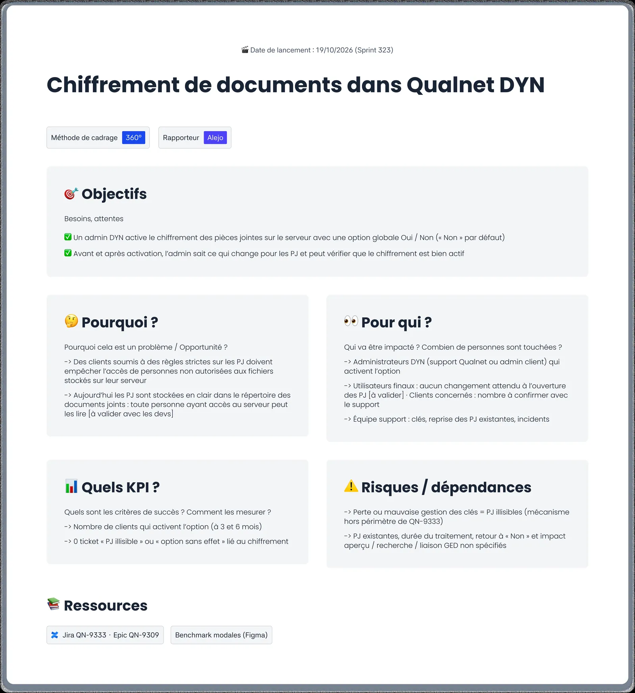
02 · Benchmark de 5 solutions
Pour décider quelle modale proposer, j'ai analysé comment Nextcloud, Dropbox, Windows BitLocker, GitHub et Amazon S3 présentent une action à fort impact : ce qu'on observe, ce qu'on aime et ce qu'on aime moins.
- Indispensable : dire le périmètre (nouveaux documents ou aussi les existants) et les conséquences avant de valider.
- Des boutons qui décrivent l'action (« Activer le chiffrement ») plutôt que Oui / Non.
- Retenu : le récapitulatif d'impact de Nextcloud et le choix du périmètre de BitLocker.
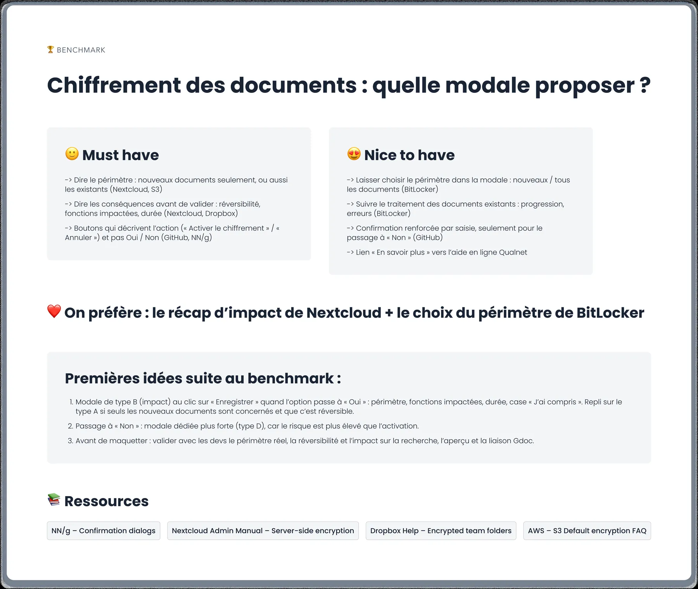
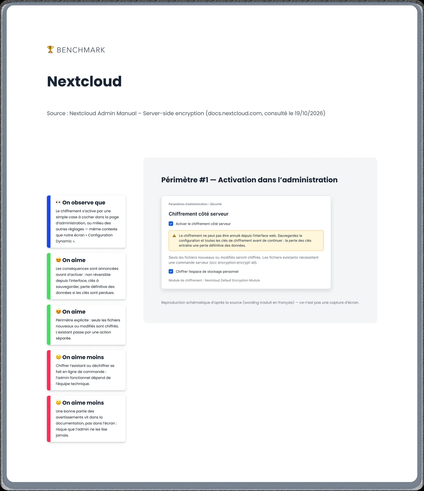
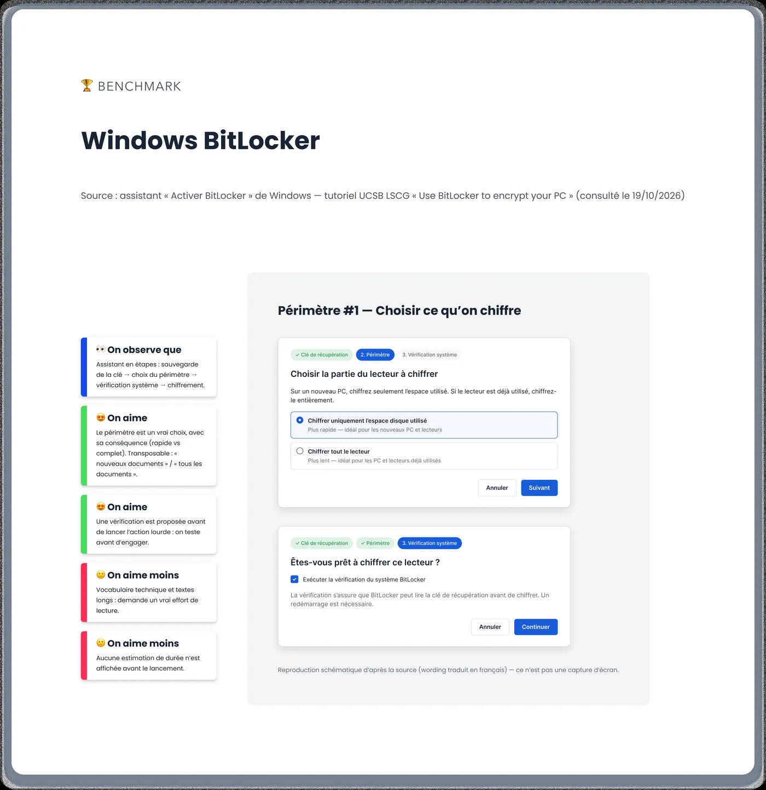
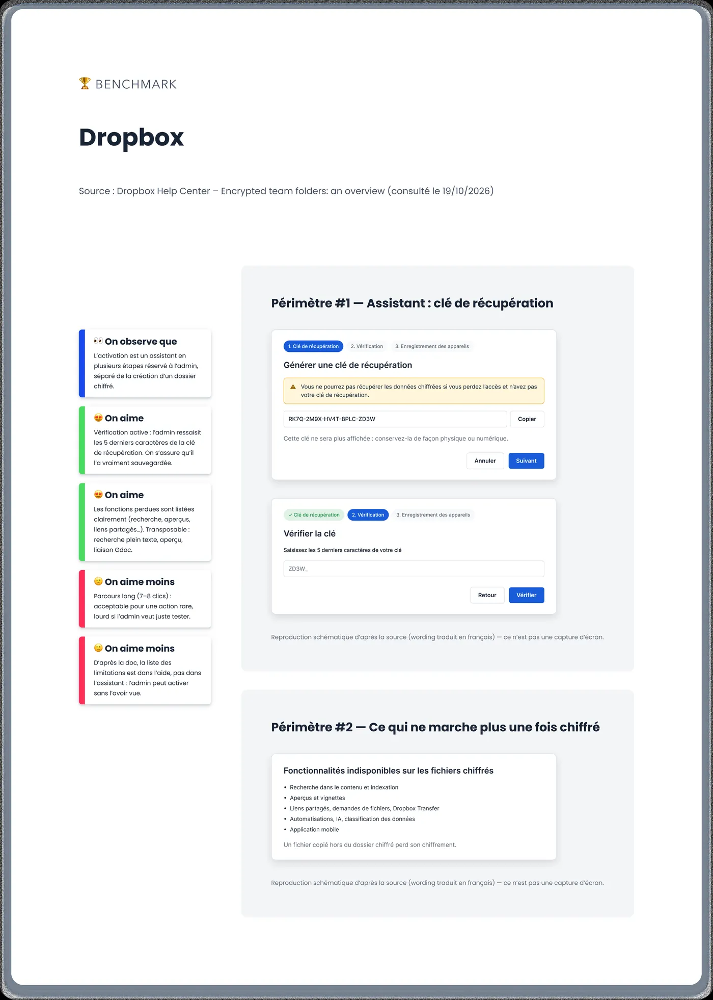
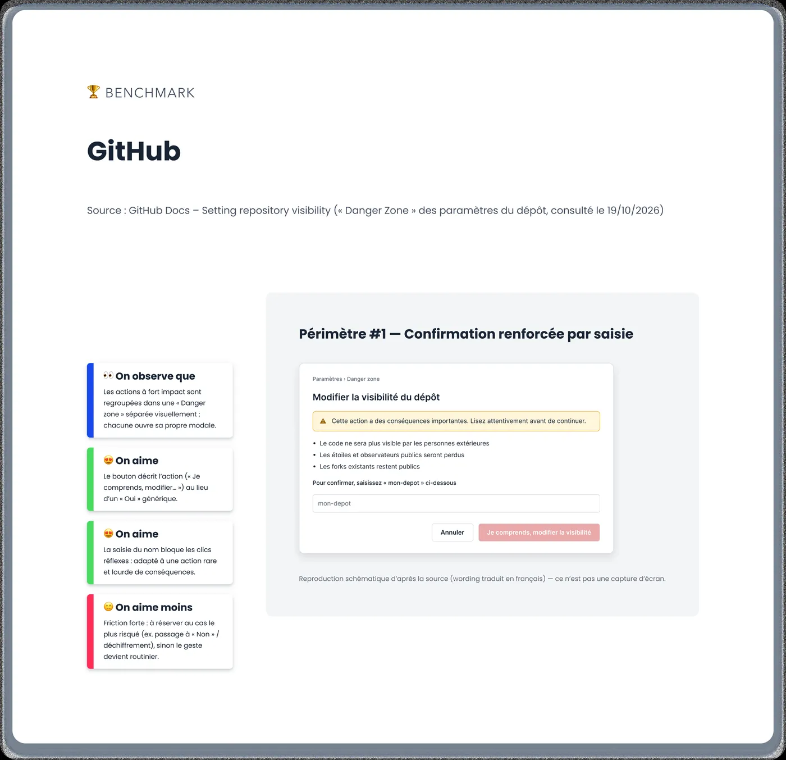
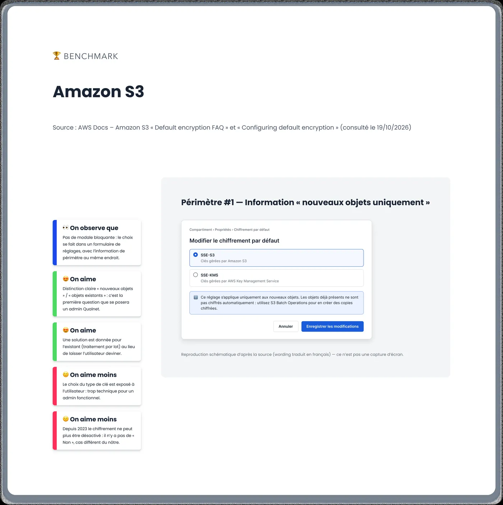
03 · Story map et flux proposé
J'ai cartographié le parcours de l'administrateur en 8 étapes, de l'accès au paramétrage à la vérification du chiffrement, puis le flux complet : écrans, modales, actions et statuts. 10 points de friction ont été repérés et priorisés avant de maquetter, à valider avec l'équipe de développement.
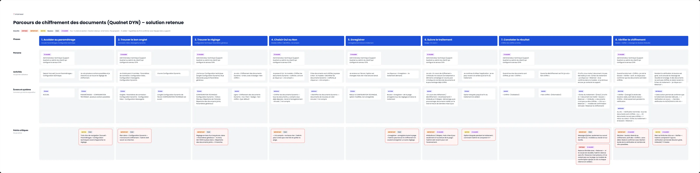
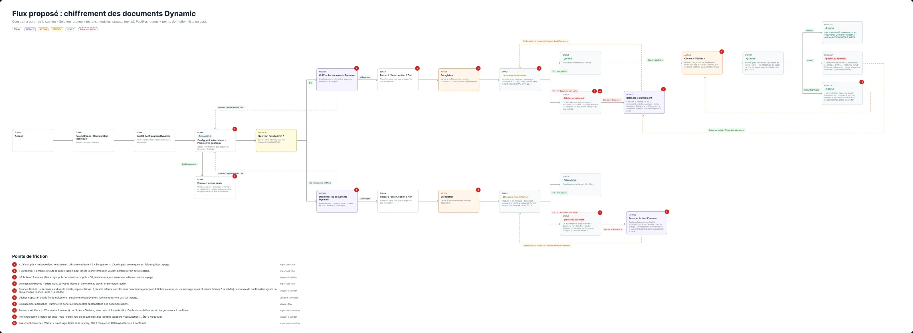
04 · Solution retenue
Les maquettes couvrent chaque état de l'option : non chiffré, en cours de chiffrement, chiffré, échec du traitement et vérification. Chaque écran est accompagné de notes pour les développeurs : modales d'impact, relance après un échec, badge de statut et infobulle de suivi.
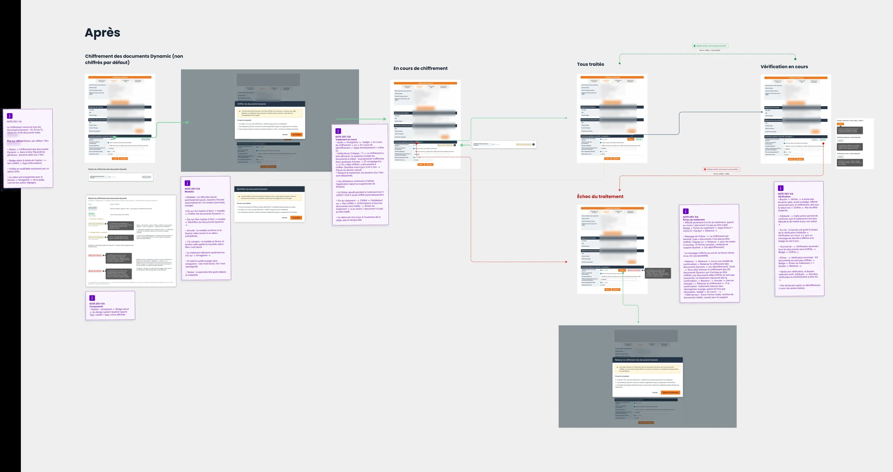